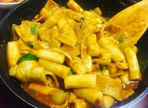
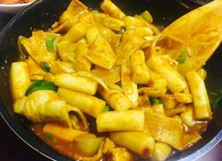

엽기떡볶이 : 매우면서도 중독성이 있어서 주인장이 좋아함. 주인장에게는 이것 덕에 떡볶이가 처음으로 좋아짐.
※먹을 시 주인장이 3% 확률로 폭주함
※폭주 했을 시 칼로리 폭탄을 만들 수 있으니 주의
※먹을 시 주인장이 3% 확률로 폭주함
※폭주 했을 시 칼로리 폭탄을 만들 수 있으니 주의
짜장떡볶이 : 짭조름하면서도 맛있어서 주인장이 좋아함. 무난하게 먹을 수 있는 떡볶이.

※밥 비벼먹으면 J.M.T
※먹을 시 주인장이 3% 확률로 폭식함
※밥 비벼먹으면 J.M.T
※먹을 시 주인장이 3% 확률로 폭식함
카레떡볶이 : 본래 카레를 주인장이 좋아함. 주인장이 잘 먹을 수 있는 떡볶이.

※먹을 때 건드릴 시 15% 확률로 화를 냄
※화를 낼 때 30% 확률로 삐짐(매우 귀찮아지므로 주의요함)

※먹을 때 건드릴 시 15% 확률로 화를 냄
※화를 낼 때 30% 확률로 삐짐(매우 귀찮아지므로 주의요함)